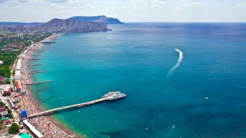

Кінбурнська коса
Знаходиться в очаківському районі Миколайовської області. Тут вас чекатимуть пляжі з білим піском, аромати хвойного ліса та степів. До того ж на косі є залежі цілющих грязей. Це місце більше підходить для людей, які хочуть тихого та спокійного релаксу - практично відсутня інфраструктура, пляжні продавці, чути лише звук морських хвиль. Можна сходити до Національного природний парк "Білобережжя Святослава" - чудове місце для фотополювання на пелікана, рожевого фламінго, білу чаплю. В районі Очакова (с. Парутіно) також є "Ольвія" - Національний історико-археологічний заповідник ( тут можна побачити руїни оборонних споруд, міських кварталів і храми грецької колонії 7 століття).
Кароліно-Бугаз
Невелике селище, яке розташоване на піщаній косі у 40 хвилинах від Одеси. Вздовж всієї коси - морські пляжі з ідеально чистим піском. Відпочинок в Кароліно-Бугазі традиційно вважається елітним - сприятливе географічне положення і повна відсутність промислових підприємств дозволили цьому шматочку суші стати одним з найбільш екологічно чистих місць на чорноморському узбережжі. Прилегла до пляжу земля на косі майже повністю зайнята новим житлом. Дешеві кімнати і будиночки ховаються на другий-третій лініях в 10-15 хвилинах ходьби від моря. Тут майже нема атракціонів для дітей, тому якщо ви полюбляєте спокійно полежати у шезлонгу, попиваючи домашнє вино - вам сюди. На що подивитися? По-перше, варто витратити день і поїхати до Одеси. По-друге - відвідати містечко Білгород-Дністровський (давня назва Акерман), де є відома Аккерманська фортеця, що несе в собі історію 12-15 століть.
Кирилівка
Кирилівка(рос. Кирилловка) - це пляжний та грязевий курорт у Запорізькій області. Селище знаходиться далеко від шумних міст, і тут нема залізниці, як у сусідньому Бердянську, та великих автотрас. Море не глибоке та дуже тепле, що чудово підходить для відпочинку з дітьми. Поруч розташовуються дві коси: Пересип і Федотова, Утлюкський і Молочний лимани. Є нічні клуби, дельфінарій, аквапарк, атракціони, ресторани і кафе.
На що подивитися: у околицях села Терпіння знаходиться унікальний геологічний пам'ятник - Кам'яна Могила. У цьому місці були також знайдені петрогліфи - наскельні зображення тварин, людських і геометричних фігур. Неподалік - невеликий археологічний музей.
Також відвідайте Великі і Малі Кучугури - це місцева назва пагорбів, дюн і гряд, що утворилися на терасах річок завдяки вітрам та піску. Після введення в дію водосховища вони перетворилися в ланцюжок островів, де зараз розташовується орнітологічний заказник площею 4 кв. км - місце гніздування водно-болотних птахів.
Синевір
Озеро Синевір вже давно є своєрідною візитка України. Воно знаходиться серед пишних лісів Закарпаття, на вершині гори Озірна. Озеро дуже глибоке й чисте, з крутими схилами берегів, порослих ялівцем та буком. Тут можна стати табором із своїм наметом або оселитися у кемпінгу.
Скадовськ
Місто знаходиться на березі Джарилгацької затоки Чорного моря, Херсонська область. Чудово підходить для відпочинку з дітьми: тут не глибоке море і тепла вода, насичена йодом і бромом, є аквапарк и дельфінарій, відбувається навчання і катання на кайтсерфінгу. В аеропорту Скадовська можна навіть здійснити стрибок з парашутом через дві години тренувань.
Залізний порт
Залізний Порт(рос. Железный Порт) - це село в Херсонській області. Плюсом відпочинку на цьому курорті є довгі піщані пляжі, які вміщують в себе величезну кількість відпочиваючих, а море також має піщане дно.
На території району Бехтери відкрився лікувальний гейзер глибиною 1572 метра, температура якого близько 70 градусів. Це справжній молодіжний центр. Постійні дискотеки, цілодобово працюючі бари, ресторани, лунапарк, аквапарк, безліч піцерій тощо.
Також неподалік селища є два біосферних заповідники - Асканія-Нова і Чорноморський біосферний заповідник, тут організовуються прогулянки по плавнях Дніпра, винні тури по винзаводам України, можна пройти курс грязелікування або поїздити по кінним клубам.
У 30 кілометрах від Херсона є найбільший піщаний масив у Європі - Олешківські піски діаметром близько 15 кілометрів. Там є справжні бархани заввишки п'ять метрів, рідкісна пустельна рослинність і навіть оазис. Туди організують триденні тури з переходом через пустелю, піснями біля багаття і ночівлею в наметах
Лазурне
Знаходиться на узбережжі Чорного моря в 100 км від Херсона. Має пляжну смугу протяжністю 4 кілометри, ширина смуги сягає від 5 метрів до 100 метрів. Основну масу відпочиваючих складає молодь, починаючи від учнів старшої школи, закінчуючи молодими сімейними парами. В Лазурному перша лінія зайнята оздоровницями радянської побудови, решта - приватний сектор. Тут можна оздоровитися, прийняти грязьові ванни. Є кафе, ресторани, декілька нічних клубів, ринок. Також можна переплисти на матраці на острів Джерілгач, де чистіше море і частенько засмагають голяка молоді дівчата;)

Коблево
Знаходиться на узбережжі Чорного моря в 100 км від Херсона. Має пляжну смугу протяжністю 4 кілометри, ширина смуги сягає від 5 метрів до 100 метрів. Основну масу відпочиваючих складає молодь, починаючи від учнів старшої школи, закінчуючи молодими сімейними парами. В Лазурному перша лінія зайнята оздоровницями радянської побудови, решта - приватний сектор. Тут можна оздоровитися, прийняти грязьові ванни. Є кафе, ресторани, декілька нічних клубів, ринок. Також можна переплисти на матраці на острів Джерілгач, де чистіше море і частенько засмагають голяка молоді дівчата;)
Хорли
Херсонська область, півострів Гіркий Кут. Окрім купання у Чорному морі можна досхочу мазатися цілющими грязями, а широкі береги вкриті морськими водоростями, багатими на йод. Море чисте і тепле: + 25- + 30 градусів. При в'їзді в Хорли ви обов'язково побачите фонтан заввишки в два метри - з-під землі б'ється артезіанська вода температурою 9 грудусів. Доволі розвинута інфраструктура: є кафе та ресторанчики, кінотеатр і дискотеки, аквапарк. На території селища є ринок, банкомат, магазини, бібліотека і комп'ютерні зали. На що подивитись: пам'ятник засновниці селища баронесі Фальц-Фейн, старовинні будівлі портових складів, морського порту, залишки парка та статуя з мармуру